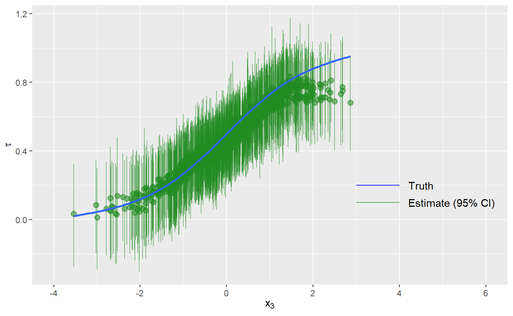
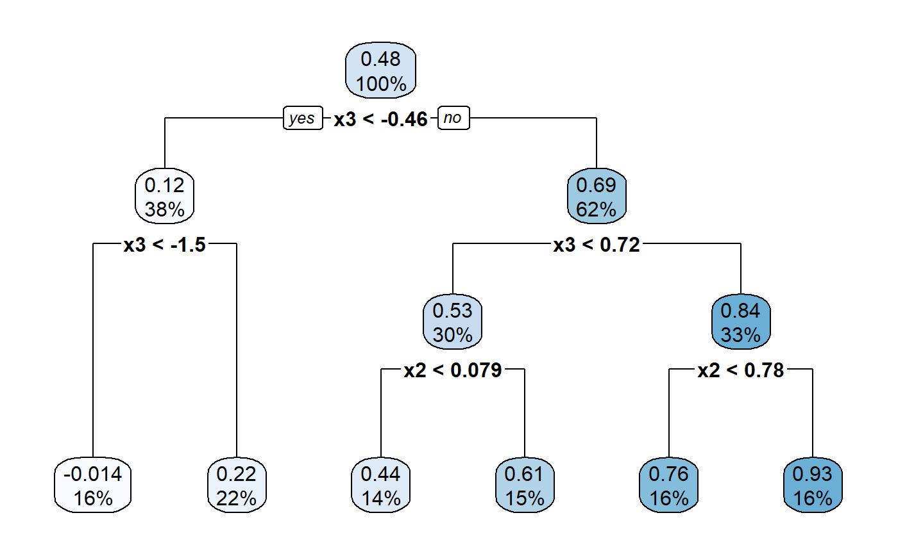
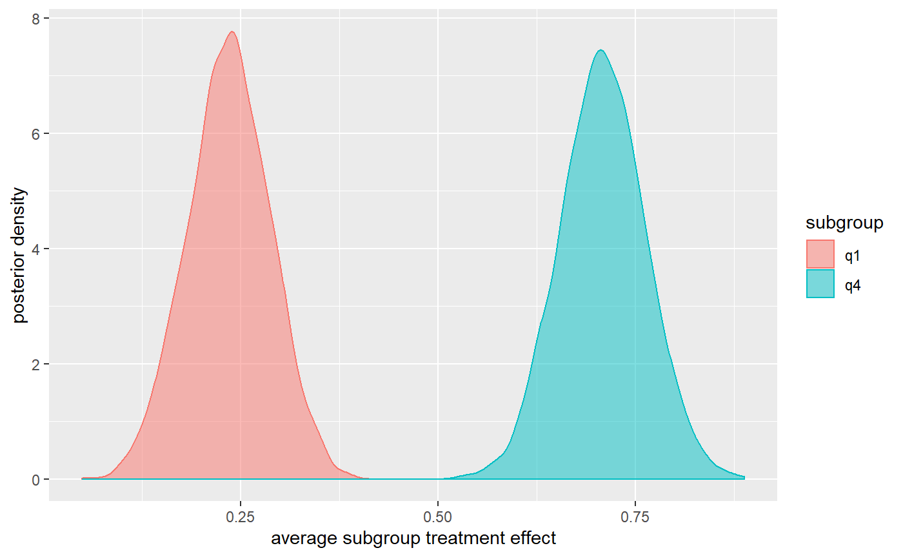

01_simple-example.RmdIn this vignette, we show how to use BCF to estimate treatment effects of a simulated intervention.
First, we simulate some data for testing. This data set has an outcome variable \(y\), a treatment indicator \(z\), and three covariates \(x_1\), \(x_2\) and \(x_3\). Of the covariates, two affect the outcome \(y\) at both levels of treatment, while the third is an effect moderator.
We draw three random \(x\)s for each unit and generate each unit’s expected outcome without treatment, \(\mu\), as a function of \(x_1\) and \(x_2\). Each unit’s probability of joining the intervention, \(\pi\), is also a function of \(\mu\), so that units with larger responses are more likely to participate in the intervention. We then assign units to treatment (\(z = 1\)) or comparison (\(z = 0\)) status as a function of \(\pi\).
Then we generate the true treatment effect for each unit, \(\tau\). As noted above, \(\tau\) is a function of \(x_3\). The observed outcome, \(y\), is a function of \(\mu\), \(\tau\), a random error term with variance \(\sigma^{2}\), and weights \(w\) if applicable.
set.seed(1)
p <- 3 # two control variables and one effect moderator
n <- 1000 # number of observations
n_burn <- 2000
n_sim <- 1000
x <- matrix(rnorm(n*(p-1)), nrow=n)
x <- cbind(x, x[,2] + rnorm(n))
weights <- abs(rnorm(n))
# create targeted selection, whereby a practice's likelihood of joining the intervention (pi)
# is related to their expected outcome (mu)
mu <- -1*(x[,1]>(x[,2])) + 1*(x[,1]<(x[,2])) - 0.1
# generate treatment variable
pi <- pnorm(mu)
z <- rbinom(n,1,pi)
# tau is the true treatment effect. It varies across practices as a function of
# X3 and X2
tau <- 1/(1 + exp(-x[,3])) + x[,2]/10
# generate the expected response using mu, tau and z
y_noiseless <- mu + tau*z
# set the noise level relative to the expected mean function of Y
sigma <- diff(range(mu + tau*pi))/8
# draw the response variable with additive error
y <- y_noiseless + sigma*rnorm(n)/sqrt(weights)In this data set we have observed \(y\), \(x\), and \(\pi\) values to which we can fit our BCF model. With BCF, we can distinguish between control variables – which affect the outcome at both levels of treatment – and moderator variables – which affect the estimated treatment effect.
Note that we are using the n_chains argument to bcf(), which allows us to run several MCMC chains in parallel and assess whether they have converged to the posterior distribution.
After fitting the BCF model, we can compare the \(\hat{\tau}\) estimates from BCF to the true \(\tau\) from the data-generating process.
bcf_out <- bcf(y = y,
z = z,
x_control = x,
x_moderate = x,
pihat = pi,
nburn = n_burn,
nsim = n_sim,
w = weights,
n_chains = 4,
n_cores = 2,
random_seed = 1,
update_interval = 1)We use the summary.bcf function to obtain posterior summary statistics and MCMC diagnostics. We use those diagnostics to assess convergence of our run.
summary(bcf_out)
#> Summary statistics for each Markov Chain Monte Carlo run
#>
#> Iterations = 1:1000
#> Thinning interval = 1
#> Number of chains = 4
#> Sample size per chain = 1000
#>
#> 1. Empirical mean and standard deviation for each variable,
#> plus standard error of the mean:
#>
#> Mean SD Naive SE Time-series SE
#> sigma 0.37652 0.008672 0.0001371 0.0001619
#> tau_bar 0.47725 0.041037 0.0006488 0.0012840
#> mu_bar -0.08635 0.023292 0.0003683 0.0007312
#> yhat_bar 0.19133 0.012989 0.0002054 0.0002100
#>
#> 2. Quantiles for each variable:
#>
#> 2.5% 25% 50% 75% 97.5%
#> sigma 0.3597 0.3707 0.3765 0.38215 0.39366
#> tau_bar 0.3960 0.4504 0.4772 0.50520 0.55821
#> mu_bar -0.1315 -0.1023 -0.0868 -0.07065 -0.04007
#> yhat_bar 0.1664 0.1824 0.1916 0.20005 0.21679
#>
#>
#> ----
#> Effective sample size for each parameter
#> sigma tau_bar mu_bar yhat_bar
#> 2345.6247 878.8322 978.4205 3622.4126
#>
#> ----
#> Gelman and Rubin's convergence diagnostic for each parameter
#> Potential scale reduction factors:
#>
#> Point est. Upper C.I.
#> sigma 1 1.01
#> tau_bar 1 1.01
#> mu_bar 1 1.00
#> yhat_bar 1 1.00
#>
#> Multivariate psrf
#>
#> 1.01
#>
#> ----Since our “\(\hat{R}s\)” (Gelman and Rubin’s convergence factor or Potential Scale Reduction Factor) are between 0.9 and 1.1, we are confident that our run successfully achieved convergence.
Now that we’ve successfully fit our model, let’s explore the output. First, since this is a simulation, let’s compare the unit-specific treatment effect estimates \(\hat{\tau}\) to the true unit-specific treatment effects \(\tau\).
We plot the true and estimated \(\tau\) versus \(x_3\), since \(x_3\) is one of our primary effect moderators (see the data creation step above).
tau_ests <- data.frame(Mean = colMeans(bcf_out$tau),
Low95 = apply(bcf_out$tau, 2, function(x) quantile(x, 0.025)),
Up95 = apply(bcf_out$tau, 2, function(x) quantile(x, 0.975)))
ggplot(NULL, aes(x = x[,3])) +
geom_pointrange(aes(y = tau_ests$Mean, ymin = tau_ests$Low95, ymax = tau_ests$Up95), color = "forestgreen", alpha = 0.5) +
geom_smooth(aes(y = tau), se = FALSE) +
xlab(TeX("$x_3$")) +
ylab(TeX("$\\hat{\\tau}$")) +
xlim(-4, 6) +
geom_segment(aes(x = 3, xend = 4, y = 0.2, yend = 0.2), color = "blue", alpha = 0.9) +
geom_text(aes(x = 4.5, y = 0.2, label = "Truth"), color = "black") +
geom_segment(aes(x = 3, xend = 4, y = 0.1, yend = 0.1), color = "forestgreen", alpha = 0.7) +
geom_text(aes(x = 5.2, y = 0.1, label = "Estimate (95% CI)"), color = "black")
#> `geom_smooth()` using method = 'gam' and formula 'y ~ s(x, bs = "cs")'
#> Warning: Removed 6 rows containing non-finite values (stat_smooth).
#> Warning: Removed 6 rows containing missing values (geom_pointrange).
BCF recovers the true unit-specific treatment effects with a high degree of accuracy in this simple example. To quantify this, we compute coverage.
isCovered <- function(i){
ifelse(tau_ests$Low95[i] <= tau[i] & tau[i] <= tau_ests$Up95[i], 1, 0)
}
coverage <- lapply(1:length(tau), isCovered)
perCoverage <- sum(unlist(coverage))/length(tau)
perCoverage
#> [1] 1We find that our estimates have 100 percent coverage at the 95 percent level, suggesting that our uncertainty estimates are slightly conservative in this example.
In this example, although we do see variation in the point estimates across units, most uncertainty intervals overlap, except for points at the extremes. This overlap indicates that, although there is variation in the treatment effect across units, the difference in treatment effects is not statistically meaningful at the unit level.
The BCF model obtains more accurate treatment effect estimates than other approaches partly by allowing flexible relationships with many possible effect modifiers. These relationships are often of substantive interest; researchers want to know which covariates are associated with higher or lower impacts. However, the BCF model is difficult to interpret directly: we cannot simply look at coefficients on the effect modifiers to determine which characteristics drive the impacts. Instead, we can look for patterns in the unit-specific treatment effects, linking each unit’s treatment effect estimate to its covariates.
Specifically, Hahn, Murray, and Carvalho recommend fitting a CART model where the response variable is the estimated unit-specific treatment effect from BCF and the predictor variables are the effect modifiers used to fit the BCF model. The resulting tree identifies covariates that best distinguish units with high versus low impacts, which are strong candidate subgroup variables.
tree <- rpart(colMeans(bcf_out$tau) ~ x, weights = weights)
rpart.plot(tree)
Our tree identifies \(x_3\) as the strongest effect modifier, which is correct, because we specified it as such in the data generation step.
Because the CART fit does not account for the uncertainty in the treatment effect estimates, it is possible that its tree splits do not identify characteristics that create subgroups with meaningfully different impacts. To determine whether impacts differ meaningfully based on a characteristic, we can use the posterior draws from the fitted BCF model.
Here we show a comparison of the average treatment effect for units in the top quartile of \(x_3\) versus the average treatment effect for units in the bottom quartile of \(x_3\).
q1 <- x[,3] < quantile(x[,3], 0.25)
q4 <- x[,3] >= quantile(x[,3], 0.75)
q1Taus <- bcf_out$tau[,q1]
q4Taus <- bcf_out$tau[,q4]
wq1Taus <- apply(q1Taus, 1, weighted.mean, weights[q1])
wq4Taus <- apply(q4Taus, 1, weighted.mean, weights[q4])
groupTaus <- data.frame(taus = c(wq1Taus, wq4Taus),
subgroup = c(rep("q1", nrow(bcf_out$tau)), rep("q4", 4*n_sim)))
ggplot(groupTaus, aes(taus, fill = subgroup, color = subgroup)) +
geom_density(alpha = 0.5) +
ylab("posterior density") +
xlab("average subgroup treatment effect")
The posterior distributions for the average treatment effect of the top- and bottom-quartile units do not overlap.
We would therefore conclude that \(x_3\) is an important subgroup variable. We can confirm this by computing the probability that the average treatment effect for the top-quartile units (q4) is greater than the average treatment effect for the bottom-quartile units (q1).
mean(wq4Taus > wq1Taus)
#> [1] 1We found that there is a 100 percent probability that the average treatment effect for top-quartile units (q4) is greater than that for bottom-quartile units (q1).